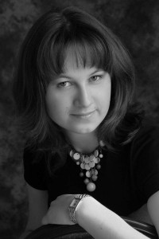
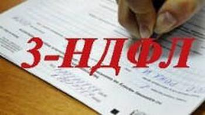

Обо мне
Частный бухгалтер — Копылова Марина Андреевна- Высшее образование — РЭУ им.Плеханова, финансовый факультет, специальность — финансовый менеджмент (диплом с отличием).
- Опыт работы — в качестве экономиста, бухгалтера и налогового консультанта с 2008 года.
- Я предоставляю бухгалтерские услуги удаленно в собственной бухгалтерской программе.
- Все вопросы можете задать в любой момент и Вы гарантировано получите быстрый компетентный ответ.
- В работе использую специальные налоговые программы. Вы всегда можете быть уверены, что сдадите актуальную форму документа.
- Своя бухгалтерская программа 1С, всегда актуальная версия, сделаю необходимые документы для Вас.
- Сдача отчетности через Интернет прямо из программы без затрат сил, средств, времени и нервов на стояние в очередях (при наличии ЭЦП).
- Консультации онлайн по телефону, вотсап, электронной почте.

Для физических лиц
- Налоговый вычет 3-НДФЛ для физических лиц.
- Вернуть налог при покупке квартиры.
- Вернуть налог за лечение.
- Вернуть налог за обучение.
- Вернуть деньги при покупке недвижимости.
- Сделать счет, акт, накладную в Лобне.
- Налоговые консультации в Лобне.
- Распечатать документы в Лобне.
- Консультации для физлиц по вопросам имущественных и социальных вычетов.
- Заполнение 3-ндфл для иностранных граждан/мигрантов
Для юридических лиц
- Ведение бухгалтерского учета ООО и ИП на упрощенной и общей системе налогобложения.
- Заполнение декларации УСН.
- Оформление трудовых договоров.
- Квинтации на оплату налогов и взносов.
- Квитанции на обязательные платежи ИП
- Заполнение РСВ, 6-НДФЛ, 4-ФСС.
- Отчет ИП, оформление сотрудников ИП, расчет зарплаты сотрудников.
- Налоговые консультации ИП и ООО, урегулирование фискальных задолженностей.
- Формирование отчетов в ФНС, ПФР, ФСС, в т.ч. нулевых;
- Выписки из ЕГРЮЛ/ЕГРИП срочно и удаленно;
3-НДФЛ в Лобне
Оперативно поможем Вам заполнить 3-НДФЛ, не выходя из дома.- Звоните по тел. +7(916)501-38-65 или пишите в вотсап на этом номере
- Обсуждаем детали, конкретно Вашу ситуацию, для которой заполняется 3-НДФЛ
- Я сообщаю, какие документы нужны для заполнения, их можно направить удаленно или передать при личной встрече (как правило, достаточно 2 документов)
- В течение 24 часов Вы получаете заполненную декларацию в бумажном или электронном виде, а также необходимые для сдачи декларации в налоговую заявления.
- Сдаете декларацию при личном визите в налоговую, почтой или через личный кабинет на сайте налог.ру или госуслуги.ру
